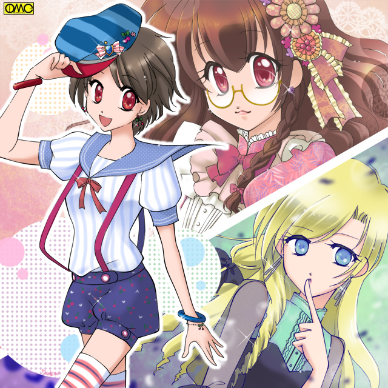
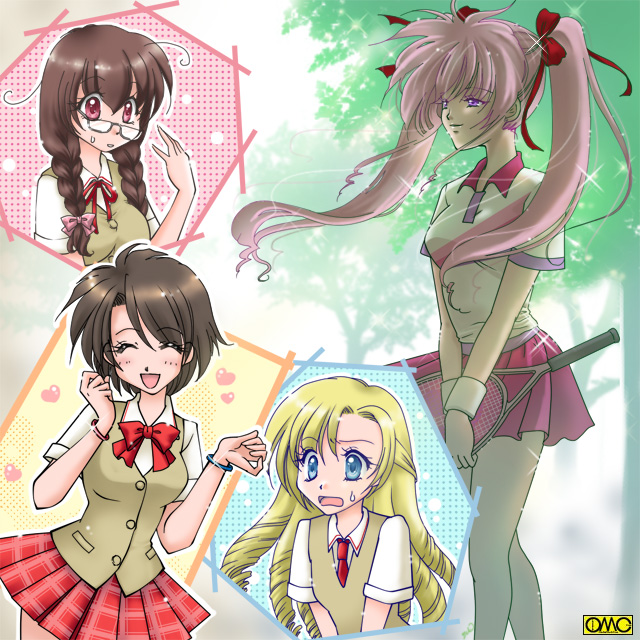
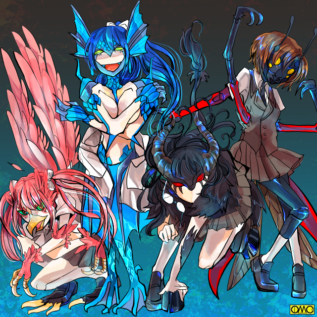

「城弾シアター」の１５年を支えてくれた人たちに
気の遠くなるほど昔の日本。今の東京２３区に当たる土地。
「異形達」と「異形達」が死闘を繰り広げていた。
女だけの戦闘民族。彼女たちは「アマッドネス」と呼ばれていた。
より強い力を求めた彼女たちは、女王から与えられた『力』で、おのれの遺伝子情報に眠る他の動物や植物の力を引き出して『化け物』と化していった。
だが時として、イレギュラーが発生する。
かたやその正規軍。
頂点に立つ女王直属の部下。ガラ将軍と六武衆と呼ばれる戦闘員。
将軍からしてガラガラヘビを思わせる姿だ。
「六武衆」もサソリ。ハヤブサ。巻貝。きのこ。キリギリス。そしてジャッカルの特徴を持つ女たち。
さらには参謀といえる大賢者・スズはスズメバチの異形だ。
それが多数の「怪人」を従えた軍勢で「敵」と闘っている。
「討伐」を受けているのはわずか三名。いや。三体。
これがまた強い。文字通りの「化け物」だ。
そう。彼女たちがその「イレギュラー」だ。
しかし多勢に無勢。
下級兵士とはいえど異形の者たち。
これを払いのけるのに疲れ果てた。
そこをガラの采配で動く六武衆がその三体に深手を負わせた。
鎖で縛られた「はぐれもの」たち。
短髪の大柄な女がノザ。細身のロングヘアがブラ。太めな女がテゴと呼ばれる。
その三名が厳重に拘束され跪かされる。
「手こずらせおって」
鎧に身を包み、厚く拵えた半月刀を手にしたガラ将軍が忌々しげに言う。
「………」
無言のままノザはガラをにらみつける。
いたるところから血を出している。激闘を物語る。
他の二人も同様だ。
「あまり悠長にしていると回復して、この程度の戒めはものともしなくなる。そんな化け物だからな」
『化け物』に『化け物』呼ばわりされる存在。それほどまでに危険な三人だった。
「だからこそ謀反をたくらんだか。愚か者め」
そう。この三名はクイーン暗殺を企てた。
その『化け物』の力で下剋上を果たそうとしたのだ。
「用意はいいか？」
深紅のドレスをまとった女。アマッドネスの長。ロゼが「処刑場」に現れた。
「はっ。クイーン。すでにこのように」
処刑人はサソリの異形。スストが斧を。ジャッカルの頭部を持つアヌが鎌を。そしてガラ自らが愛用の剣を持っていた。
「よし。即座にやれ」
「お待ちを。ロゼ様」
処刑執行を止めたローブの女。それが顔を見せる。長い髪を持つ知的な印象だ。
「何用じゃ。スズ」
ロゼは制止した大賢者・スズを不満げに見た。
それでも参謀役故に耳を傾けた。
「あの者たちは身に余る力を持ったゆえに反逆を企てました。その力を返上させれば何も出来ますまい。その上で檻に閉じ込めてしまえば殺すまでもないかと」
助命嘆願であった。
彼女は穏健派。むやみに命を奪うのをよしとしない。
この集団においては異例の存在。
だがその能力ゆえそれでも地位を預けられていた。
しかしそれほど信頼するスズの言葉をロゼは一蹴した。
「あんな悍ましいものを我が体内に戻せるか。くれてやる。そのまま土の中まで持って行け」
大事な『力』を取り戻すのもためらうほどの「悍ましさ」を感じていた。
代わりに封印の処置を施した。
いよいよ処刑となった時だ。
「ロゼ。いずれわれらは蘇る。そして貴様に復讐してやるぞ」
ノザが吠えた。
「こ、こ奴。なんと無礼な」
即座にガラは刀を振り下ろした。
無礼討ちのようだ。
三人の「異形」の首は撥ねられ、そのまま深い穴へと落とされ、そして埋められた。
（これではいけない。慈悲の心がない殺戮を続ける限り、いずれわれらもあのような死を迎える。クイーンに考えを改めていただかねば）
この時の思いがスズの反逆につながり、そして「はぐれアマッドネス」討伐で疲弊していた六武衆を単独で全滅させた。
スズ本人はガラと相打ちになったが、この件がたたりアマッドネスは神聖都市・ミュスアシでその防衛をしていた戦乙女たちにより、封印される羽目になる。
時は流れ現代。
東京のとある場所。九月の夕暮れ時。
首をはねられ、力を恐れて施されたその封印も解けた。
肉体は朽ちたが封じられていた「はぐれアマッドネス」の魂は、地上に這い出てとある学校に残っていた波長の合う三人の人間に取りつき現世における肉体を得た。
「ふう。これが今の世か？」
まさに隔世の感をテゴの取り付いた存在は感じていた。
「まずはこの世界を知らねば。そしてわれらも力を取り戻さねば」
ブラのついた存在が続く。
「そして配下だ。手ごまがいる。手始めにこれをつける奴らを見つけないとな」
ノザに呪縛された「アマッドネスの魂」が四つあった。
城弾シアター１５周年記念作品
「戦乙女セーラ」
ＶＳ
「ＰＬＳ」
前編
「Ｉｎ ｔｈｅ Ｆｏｒｅｓｔ」
この作品は「ＰＬＳ」と
「戦乙女セーラ」のクロスオーバーで
そのため原典と違う設定や展開をしています。
また、それに伴い
第三者による改変を容認してはいないことを
ここにお断りします。
東京。福真市の警察署。
その一室に一人の女性警察官と三人の男子高校生がいた。
補導などでもない。逆に協力要請だ。
そのための説明をしているところである。
「はぁ。薫子さん。もう一回言ってくれ？」
説明されている『男子高校生』の中で一番ガラの悪そうな少年。高岩清良が素っ頓狂な声を上げた。
本来の読みは「せいら」だが女性的というのでそれを嫌い「きよし」というのが通称になっている。
一般的には不良のレッテルを貼られてはいるが、単に血の気の多い性格なだけで喧嘩はしても弱い者いじめはしていない。
１８０近い大男。浅黒い肌と鋭い目つき。黒い学ランのボタンを一つも留めず羽織っていた。
この時点で九月半ばだからまだ衣替えの前で学生服の時期ではないが、彼は残暑が厳しいにもかかわらずそれを着ていた。
「話を聞いてなかったのか？ 最近ある学園で謎の性転換事件が頻発しているという話だ」
身長は清良と近い。オールバックにしたどこか威圧的な少年・伊藤礼がいう。
濃紺のブレザーを着用していたことからもわかる通り、清良とは別の高校の生徒だった。
そこの生徒会長でもある。
「それで僕たちがその学園に潜入して調べるんですよね」
うっとりとして言うメガネの少年。押川順は二人よりだいぶ小柄。
肌も白く女の子と間違えそうな顔立ちだ。
それは本人にも責任があり、意図的に女性的に振舞うため余計にそう見える。
上下グレーの学生服だった。
「そういうことなの。お願いできる？」
髪の短い彼女の名は一城薫子。警視庁の私服警官。平たく言うと刑事だった。
都内でも頻発する怪事件。
それを調べていくうちにそれは現代によみがえったアマッドネスの仕業とわかった。
薫子はその流れで清良と出会い、こうして協力関係になっている。
「だからなんでオレたちが女として学園生活を送らなきゃなんねーんだよ？」
食って掛かる清良。
「警察じゃ閉ざされた空間である学校に入り込むには限度があるのよ。そこであなたたちにお願いしたいの」
「それは理解できます。しかし何も変身したままでなくても」
反論したのは清良ではなく礼。
「そうだぜ。ちょっとでも居眠りこいたらすぐに元に戻るんだ。リスクが大きすぎる」
珍しく意見が一致する礼と清良。
二人とも丸一日を女子として過ごすのは嫌という思いがあった。
単純に反対の性別で過ごす気苦労。そして……
（もしそれで「女のほうがいい」なんて思い始めたらどうするんだよ？）
そうでなくても戦うたびに女子化が進む。
ところが戦うどころか日常を女子として過ごせという。
登校から下校までスカート姿。トイレはもちろん女子トイレ。
授業もものによっては女子として。
そして何よりクラス全員に「寄ってたかって」女子として扱われ、潜入という手前自らも女子としてふるまう。
わずかな期間で「洗脳」されそうで怖かった。
だがアマッドネスも見過ごせない。
別の手はないかと二人して考えていたが。
「いいですよ。僕は」
渋い表情の二人に対して順は乗り気だ。
「なぁ。薫子さん。どうしても女じゃないとダメか？」
あきらめの悪い清良が言う。
それに懇切丁寧に説明する薫子。
「まず理由の一つはあなたたちの素性。アマッドネスを古代人と決めてかかるのはまずいらしいわ。現代人の知識もあるみたい」
警察が後手に回るのもあり薫子はそう考えた。
実はその警察上層部にアマッドネスの幹部がいるが、それにはまだ考えが及んでいない。
「だから本来の姿ではあっという間に正体判明につながりかねないわ。その防止」
一応は筋が通る。一応は。
「それから逆に敵があなたたちを知っていれば抑止力にはなるわ。もちろんずっといるわけにはいかないから二週間程度。それぞれの学校には一種の留学みたいな形に手続きするわ」
「……なんかこじつけくさいな。隠し事はねーだろーな？」
言われて硬直する薫子。冷や汗たらり。
（勘がいいわね。でもこれは言えないわ）
やはり秘めた案もあった、
（あなたたちを一時的でも同じ学校で過ごさせて、互いの関係性をよくして戦力を高めようというのは）
三人はあまり協力的とは言い難かった。
（そのためにも和を尊ぶ女子として過ごすのがより良い結果が出るというのも。でも正直に話して反発を招いたら台無しだし）
薫子はごまかしにかかり話題を変える。同時に「その気」にさせる作戦を実行する。
「ほらほら。こんな可愛い制服よ。ちょっと『着替えて』見たら？」
薫子は制服のサンプルを見せる。女子制服のベストとプリーツスカートを見せる。
「はーいっ」
順は即答した。敬礼までして賛意を示す。
「押川？」
「やるのかよ！？」
半ば驚き、半ばあきれて声を出す二人。
そんな二人にも進める順。
「ほらほら。高岩さんと伊藤さんも一緒に」
「やなこった」
「誰もやるとは言ってないぞ」
息びったしの清良と礼。
もしかして隠した目的は無用だったかと思い始める薫子。だが押し始める。
「ね。試すだけ試してくれない。三人とも似合うと思うけどなぁ」
年上の女性に下手に出られては断りづらい。
「ちっ」
「しかたねーなー」
一応は顔を立てて言うことを聞いた。
清良と礼も立ち上がりポーズをとる。そして
「「「変身」」」
キーワードを口にしたら三人の姿が変わる。
大柄な「不良男子」の清良はセーラー服のショートカット美少女に。
伊藤礼は女子ブレザー姿の金髪のレディに。
押川順は比較的先の二人より差異が少ないが、それでもジャンパースカート姿の女の子に『変身』した。
太古の昔、今の東京があるこの土地にあった神聖都市ミュスアシ。
それをアマッドネスの侵攻から守った三人の戦乙女。セーラ。ブレイザ。ジャンス。
アマッドネス１０８の魔星すべてを退け、女王とは相打ちになりその身を散らした。
アマッドネスの邪悪な魂は封じられたが、戦乙女たちの魂も呪いを受け、何度転生しても女としては生まれ変われない。
だが気の遠くなるほどの転生を繰り返し、現代において復活したのがこの三人。
高岩清良は拳の戦乙女・セーラ。
伊藤礼は剣の戦乙女・ブレイザ。
押川順は射抜く戦乙女・ジャンスの魂を受け継ぐ者たちであり、変身してかりそめの復活をさせるものでもある。
現代に生きる戦乙女たちは、現代のイメージから変身直後はそれぞれ在籍する学校の女子制服のイメージを元にしている。
これはイメージによって他の衣類に変換可能である。
それを応用して三人はサンプルの制服姿になった。
九月ということもあり半そでのスクールブラウス。その上から白に近いクリーム色のベスト。
かぶるのではなく合わせるタイプのもの。
ボトムに赤いチェックのプリーツスカート。
セーラとブレイザはオーバーニーソックス。ジャンスはハイソックス姿だった。
「似合うじゃない」
演技抜きで絶賛する薫子。
「ほんとですか？ 嬉しい」
本気で喜んでいるジャンス。
「もういいだろ」
変身を解除しようとするセーラ。
「まあまあ。もうちょっとそのままでいて」
薫子は合図を送る。
ほどなくしてケーキとお茶が運び込まれる。
「女の子の姿のままなら美味しく感じるはずよ」
三人は黙っていた。
確かに魅力的に見えた。
変身直後は男性の精神が残っている。
そのため精神と肉体のシンクロがうまくゆかず、戦うもうまく進められない。
しかし時間経過とともに精神も女性としての人格へ変わっていく。
そうなるとシンクロして強さも増す。
そしてこの時点でもすでに精神の女性化は始まっていた。
「お茶とケーキ」の誘惑に抗えなく、そのままお茶を飲みながら話を続ける。
さらには最新のファッション雑誌まで用意してあった。
高岩清良と伊藤礼としては見向きもしないものだが、「きれいになりたい」「可愛くなりたい」という「女の子」の本能とでもいうかつい眺めだした。
「あたしはこういうアクティブなのが好き。可愛いし」
「そんなに足を出すのははしたないですわ。もっとエレガントに行きたいですわ。大人っぽく、美しく」
「私はストレートに可愛いのがいいなぁ。ロリータ服最高！」
それぞれが着飾った自分をイメージして、まんざらでもなさそうな表情になる。
そのままファッショントークに花が咲く。

このイラストはＯＭＣにって作成されました。
クリエイターの對馬有香さんに感謝！
それでガールズトークを展開までする三人。
十分あればＯＫなものが一時間にわたりこれである。もうすっかり『女子高生』である。
「それで、お願いは聞いてもらえるかしら？」
頃合を見計らって薫子が尋ねる。
「はぁーい。薫子お姉さまの頼みでしたら」
元々精神も女性化すると薫子を姉のように慕うが、ここでも変貌の激しい清良・セーラである。
精神の女性化は言葉遣いに如実に表れる。
性格というか人格も女性的に変化する。
もちろん思考もである。
一応は男子としての記憶はあるが、この時点では完全に女性である。
極端な話、男子が恋愛対象にもなりえる。
「この二人と同じ学校というのは気が進みませんけど」
金髪縦ロールのブレイザはその風貌に合うお嬢様口調で言う。
「えー。あたしはけっこう楽しそうかなと思うけど」
眼鏡に三つ編みというビジュアルのジャンスが、その豊かな胸を弾ませる。
全員が了承した。
薫子の作戦勝ちだった。
「ありがとう。それじゃ三人とも三日後からこの私立・蒼空学園に一時的に転入してもらうわ」
当日。清良は自宅の自室で起床するなり深いため息ついた。
「きったねーよなー。薫子さん。ああなったら完全に女だっつーのに、その時に約束取りつけるたぁよ」
言質どころか書類にサインまでしてしまった。
ふてくされてはいたもののしてしまった約束は仕方ない。
「不良」の割に妙に律儀なのは「セーラ」の影響かもしれない。
一応男子学生服に着替えた。そして
「…………変身」
おもいきり投げやりに変身した。
いつものセーラー服姿だ。
それから写真を取り出す。
前日きっちり撮られた自分の「蒼空学園制服姿」だ。
それでイメージを確認して、同じ姿へと変わる。
鏡でみて間違いないことを確認した。そしてまたため息。
それからしばらくして。
隣家に住むポニーテールの少女が高岩家を訪れた。
「あれ？ 友紀（ゆうき）おねえちゃん？」
出迎えは高岩理恵。清良の妹で中学生。
「キヨシはまだ？ 寝坊しているの？」
幼なじみの少女だった。
清良とは淡い関係というか。
いや。一時は「殺し合い」までした「深い仲」だ。
それというのも彼女の嫉妬心を利用して取りついたファルコンアマッドネスに肉体を奪われ、ハヤブサの異形として清良と知らずセーラをつけ狙ったことがある。
それはすでに終わっているのだが、実は現在「もう一体のアマッドネス」が彼女とともにある。
これについても清良はすでに知っている。
「あれ？ お兄ちゃん話してなかったの？ 今日からしばらく女子高生になるんだって」
「はぁ？」
友紀は素っ頓狂な声を上げた。
無理もない。
耳を疑う一言だ。
とはいえど女子に変身できる肉体。ない話ではないか、それでもやはり驚く。
（どうせ調査だけよ。三人もそろっていれば十分）
頭の中で言い訳しながら電車に揺られるセーラ。
バイクで登校してはあまりに目立つので、公共交通機関を用いての移動だ。
（だから友紀に教えなくてもいいわ。恥ずかしいじゃない）
駅を降りて慣れない学園への道を確認しつつ歩いているセーラ。
（セーラ様。その道をまっすぐです）
彼女の脳内に声が響く。
いわゆるテレパシーで会話してるのはセーラの使い魔。キャロル。
普段は何の変哲もない黒猫の姿。強いてあげると首輪がやや一般的ではないデザイン。
このキャロル。黒猫は仮の姿。
その正体は人造生命体で、神話の時代には翼をもつ白馬……天馬としてセーラとともに戦っていた。
（キャロル。変わった様子はある？）
（特に見当たらないです。ドーベル。ウォーレン。そっちはどう？）
（こちらも何もない。少なくとも現時点で変化しているアマッドネスはおりません。ブレイザ様）
途中から彼の主に対する報告になっていた。
ドーベルの名が示すとおりドーベルマンの姿をした使い魔はブレイザの配下だ。
（空からも見えねぇな。あっ。おい。ジャンス。いくら女子高生で通せるのが嬉しいからってスキップはやめろ。目立つだろうが）
カラスを模したウォーレンは主に対してダメ出しをしていた。
三人の「戦乙女」たちは蒼空学園の正門前で合流した。
「お二人ともいいですか？ 今日から女の子としての学生生活が始まりますよ。ああ。夢のよう」
本来の押川順の時から女子としての要素が強いジャンスは、まるまる女子として過ごせるのを本当に夢見ていた。
「わかってるわよ。ここまできたら完全に割り切るわよ」
もう完全に女子に切り替わっているので、抵抗も薄らいだセーラ。
「そうですわね。ここではとりあえず別の女子として通わねば」
平たく言うと偽名を用意していた。
蒼空学園。２年Ｄ組。それがセーラの当面のクラスだ。
「今日からこの学園に通うことになりました高石聖奈（たかいし せいな）です。よろしくお願いします」
本名をもじっての偽名だ。うっかり本名で呼んでもごまかせるようにという狙いだ。
偽名まで使っているその割には、制服以外は通常と変わらない。
いうまでもなくセーラの装備である赤と青のガントレットは、右に赤い、左に青いリストバンドに変えてつけていた。
「みんな仲良くしてあげてね」
優しそうな担任。木上以久子の言葉に「はーい」と返事をするクラスの面々。
「それじゃ席はあそこ。あの二つお下げの女の子の後ろがあいているわ」
「はい」
言われたセーラ。いや。ここでは『聖奈』と呼ぶことにする。
聖奈は言葉に従い席を目指す。
目印にされた「二つお下げの女の子」が手を上げる。こっちだという意味だ。
聖奈はそこに着くと会釈して着席する。
遠くからでもよくわかったが、近くで見ると「ものすごい」レベルの美少女だ。
本来は男とは言え現時点では女の聖奈なのに、思わず見惚れて赤くなる。
「よろしくね。わたしは高嶺まりあ。聖奈さんって呼んでいい？」
甘ったるい声をしたツインテールの美少女はやたらにフレンドリーだった。
「あ。はい。よろしくです」
女子高生として侵入しているゆえやや態度が硬い聖奈。
それが初々しい女の子に見えた。
「あの……初めまして。槙原詩穂理です」
右隣の眼鏡をかけた黒髪の少女が挨拶をしてきた。
「あ。はい。初めまして……」
絶句した。その詩穂理という少女の胸元が、あまりに立派だったからだ。
（ジャンスより大きいわね。すっごぉーい）
「よっ。あたしは綾瀬なぎさ。よろしくねっ」
後ろの席のポニーテールの長身の少女が小声で言う。
「はい。よろしくです」
初対面だが「体育会系」と感じた聖奈は、なんとなくだが親しみを覚える。
「類は友を呼ぶ」というやつか。
「ほら。美鈴も」
なぎさが勧める。聖奈の左隣の小柄な少女。短い髪だがリボンで飾りつけているので華やかに見える。
「は、初めまして。南野美鈴です。よろしくお願いします」
同世代なのにやたら緊張した様子。
「あ。はい。こちらこそ」
気の小さな女の子なんだなと聖奈は解釈した。
「はい。挨拶は休み時間にね。ホームルームを始めますよ」
やんわりと担任にたしなめられて舌を出すまりあ。
そんな仕草ですら愛らしい。
（この子たちと友達にか）
思えば清良としてもセーラしても戦いの日々だった。
こんな風に友好的なのは新鮮だった。
（悪くは……ないかも）
２年Ａ組。ここでも転校生が紹介されていた。
「初めまして。押村順子（おしむら じゅんこ）ですっ」
元気のいい挨拶はジャンスだった。
ここでは押川順をもじって押村順子と名乗っていた。
ちなみにこの偽名だが「どうせ女の子で通すなら『子』のついた名前にしたい」という思いからついた物だ。
「はいっ。質問ですにゃ」
担任を無視して一人の女子が質問をしてきた。
二つの三つ編みお下げに眼鏡だった。しかしそれ以上にインパクトのあるものに軽く驚くジャンス……順子。
質問されたことではなくその少女。里見恵子が頭にネコミミをつけていたことにだった。
明るい色の髪。三つ編みおさげが二つ。眼鏡が野暮ったいが、どことなくネコミミのせいでコスプレじみている。
「好きなカップリングは？」
間違っても初対面の相手にするような質問ではない。
「シーザー×ジョセフ」
このとんでもない質問に真顔で即答だった。
女の子としての設定として、元々オタク故「腐女子」という設定にした順子。
いきなりそれが役に立った。
「おお。シージョセですかにゃ。あたしもだにゃ。あたしたち、気が合いそう」
いきなり友人。それも「腐女子仲間」が出来てしまった。
（これはいい。お友達ができれば楽しくなるわ）
普段なら「情報収集が楽になる」とでも考える「ジャンス」だが、やはり女子として過ごせるので舞い上がっているのか優先順位が変わっていた。
Ｃ組では……
「わたくしの名前は糸井麗華（いとい れいか）ですわ。よろしくお願いいたしますわ」
平常運転のブレイザだった。「伊藤礼」をもじって「糸井麗華」と名乗ったが、その「麗華」という名前が恐ろしくしっくりくる「お嬢様」ぶりだ。
その「お嬢様」ぶりにカチンときた人間もいた。
「随分と気取った態度だな。一期一会の心を知らんのか？」
長い黒髪を無造作に縛った「いかにも武闘派」な雰囲気を醸し出す少女だ。
長身で派手さはない。和風の顔立ちだ。
「千利休のお言葉ですね。戦国の世とあらば今朝あいさつした相手が、夜には戸板に乗せられて無言の帰宅もあり得ました。だからこれが最後かもしれないという思いでもてなせと」
「そこまでわかっていたなら何故あのような居丈高にふるまう」
「そうおっしゃられてもわたくし、あれが普通ですのよ」
嘘は言ってない。
「言葉でだめなら、こいつで語るしかなくなるが」
どうしてそこまで突っかかるのか彼女自身わかってない。
そして突っかかっているのに、どういうわけか楽しくなってきている。
「わたくし、剣は少々は嗜みますが拳は振るいませんわ」
ブレイザこと麗華もやり返す。Ｃ組の面々はハラハラして見守っている。
担任も注意できない緊迫感だ。
だがそれを破ったのは当の突っかかった本人。
「はははっ。面白い奴だな。お前。なんとなく『できる』と思ったが、どうやらあたりのようだな」
少女は立ち上がって教壇にいる麗華に歩み寄る。
「私の名前は芦谷あすか。女子空手部の主将だ。困ったら私を頼れ」
「お気遣い恐縮ですわ」
武人同士で通じ合ってしまった。
転校生といえば恒例の質問攻め。聖奈も例外ではない。
ある程度はぼろが出ないように本当のことも混ぜる。
「前の学校はどこなの？」
「福真高校です。ご存知ですか？」
「ううん。知らない」
（どうせ２３区じゃないし……）
軽くへこむ聖奈。それなりに愛校心はあった。
「どうしてこっちへ？」
「ちょっとそれは」
この言い方だと前の学校で何かあったととられるが別にかまわなかった。
むしろ「男よけ」にするつもりだった。
いつもは戦闘中だけ女子化するセーラたち。
それが学園内では登校から下校までずっとといつもの比ではない。
そうでなくても精神が女子化するのだ。
男に言い寄られたらよろめきそうだった。
だから勘違いされた方が好都合だったのだが——
「高石君。聖奈ちゃんって呼んでいいかな？」
「あ。はい」
本来は男でありながら、精神が女性化しているせいか、その美少年に不覚にもときめいた。
無理もない。金髪こそブリーチして作り上げたものだが、その端正な顔は本物。
サッカーで鍛えて無駄な肉のないボディも、女子に好印象を持たれるには十分だった。
「僕は火野恭兵。よろしくね。聖奈ちゃん」
（あ。女ったらしだ）
そのなれなれしい笑顔に男と女両方の感覚で察した。そして警戒した。
「もう。キョウ君たら」
なぎさが強引に引きはがしにかかる。
女子たちが騒ぐ。
恭兵のファンである彼女たちにしたら、彼が興味を抱いた聖奈は危険な存在。
まっさきになぎさが動いた。
「ちょ、おま」
「幼なじみのあたしには、あんなふうにしてくれたことないのに」
「なじみが深すぎて今更お前に女を感じるか。新しい女の子にはとりあえず声をかける。それが僕のポリシー。奇跡の出会いかもしれないだろ」
言い終わると別口の女子たちにもみくちゃにされ、引きはがされるなぎさと恭兵。
なぎさはさみしそうな表情になる。
なんとなく関係性を理解した聖奈。
今度は赤毛の少年が聖奈にアプローチしてくる。
「よっ。オレは風見裕生。よろしくな」
鍛えている雰囲気が全体から漂う。
ただアスリートという印象でもない。
それになんだか無駄に動きが大きい。
「あっ。はい。こちらこそ」
本来の清良ならにかっと笑って握手でもするところだが、現在の少女である聖奈はそこまでしない。
「ところでさ、高石。アクションに興味ねーか？」
「アクション？」
「そっ。特撮なんかでのスタントマン。ちょっとごめんよ」
いきなり聖奈の手を取る。
小さくてすべすべした華奢な白い手だ。
「……あー。映像は映像でも顔出す方だな。運動できるようにゃみえねーや」
実際は何体もの怪人と闘い、これを倒してきた手ではある。
ただし変身のたびに再構築されるので「肉刺」とか「タコ」もない。
そして腕力ではなく、その身に宿した魔力で倒すので、確かに手は女の子そのものの華奢さであった。
「ヒロ……風見君。いつまで手を握ってるんですか」
硬いという印象のあった詩穂理が、冷たさすら感じさせる口調でたしなめる。
明らかに気分を害している。
「なんだよシホ。よそよそしいなぁ。その呼び方。いつものように頼むぜ」
だがまだ手を握ったままだ。
「だからいつまで他の女の子の手を握ってるんですか！？ ヒロくん」
「他の女の子？」
女子が過敏に反応した。
はっと我に返る詩穂理。
「や、やだ。私ったら」
赤くなる。明らかなヤキモチに恥じ入る。
（ふーん）
今度は『女の直感』で詩穂理と裕生の関係を察した聖奈である。
「ねえねえ。君、男っぽいとか言われない？」
そういってきたのは女と見惑う美少年であった。
やたらに愛想のいい女性的な笑顔が、そう思わせる。
（随分となれなれしいわね。女好きなのかしら？）
現在は女子そのものの聖奈が心中で眉をひそめる。
「優介っ。失礼じゃない」
まりあがたしなめる。
男っぽいと言われて認める女子はいても、喜ぶ女子はいるわけないのでそれも当然。
「うーん。なんか男の子っぽく思えたんだよね。ぼくの美少年センサーが誤作動でもしたのかな？」
「そうだよねー。水木君は男の子が好きなのに変だと思った」
クラスメイトの女子の一人がいう。聖奈……セーラ。いや。「清良」は軽く引く。
（もしかしてホモ？ それに目をつけられちゃった？ あ。でも今は女だから大丈夫かな？）
女性化を嫌がる清良も、この時ばかしは「女でよかった」と心から思った。
「優介。女の子に迫るんだったらわたしにしたら？」
「嫌だね。お前は元々から女じゃないか」
（もともとから女！？）
たわごとと聞き流せない言葉だった。
（普通は言わない言葉よね。どうやら性転換事件は本当のようね）
聖奈は笑顔を作って推理しているのをごまかした。
「優介が女の子になっちゃったらわたしも悲しいわ。そうなる前にわたしと」
じりじりとにじり寄るまりあ。逃亡の構えを見せる優介。だが
「高嶺まりあ。男子を追って廊下を走るなど、生徒会が許さない」
一人の「女子」が立ちはだかる。
髪は長いがどこか中性的である。胸も薄い。
真新しい女子制服をまとっていた。
『生徒会』と言われたまりあはおびえた表情を見せる。
目が泳ぐ。そしてかすかに震える声で
「は、はい。わかりました」
従順な態度であっさりと引き下がる。
新参の聖奈にも異様に映る光景。
「ねえ。この学校の生徒会ってそんなに厳しいの？」
聖奈は傍らの美鈴に訪ねる。
「せ、生徒会のことは聞かないで」
涙をにじませて拒絶する。異様な光景だ。
「ちょ、ちょっと。あたしはただ聞いただけよ？」
何の変哲もない質問のはずである。
「ダメなんです……生徒会には逆らえません」
「特に会長の瑠美奈様。そして三人の側近には」
まるで雪降る中に裸で出たかのように、体を震わせる詩穂理となぎさ。
美鈴を含めたこの三人も異様に恐れていた。
（なんだか本能的レベルの恐怖みたい。そしてあの女は多分……）
「奴は生徒会の人間だ」
答えた形は美鈴がすがりつく雲つく大男。大地大樹。
いかつい顔立ちと丸太のような手足。
地の底から響く声で、清良としても身構える巨漢だ。
だがそれよりもっと驚かせる言葉が続く。
「そして元は男だった」
（間違いないわ。アマッドネスに襲われて、女にされた上に意志を奪われ「奴隷女」と化している）
ここでふと酷い怯え方のまりあたちが気になった。
（名前からして女性のようだけど、同世代の同性に様までつけるかしら？ でも逆に「おびえている」なら「感情」はあるということで、奴隷女ではなさそうね）
なぎさたちが手にかけられたわけではないと結論付け、安堵した自分に今度は驚いた。
（今日知り合ったばかりなのに、まるで昔からの友達を心配しているかのよう。なんで？）
その時は「人が人を案ずるのに不思議もない」と考えた。
授業が進みお昼休み。
食堂の位置を案内してもらうことにした聖奈。
学年もクラスも関係なく人が集まる食堂なら、情報収集にはもってこいだった。
「いいわよ。それじゃお弁当は食堂で食べましょ」
詩穂理に頼んだがまりあが了承した。
あげく四人でついてきた。
（これが女子の連帯行動か。トイレまで一緒に行くのって本当なのかしら？）
自身も現在は一介の女子高生だが、ちょっと不思議に思う聖奈。
当然だが昼食時間の食堂は人でいっぱいだった。
聖奈は食事を乗せたトレイを持ちながら、空いているテーブルを探しているがなかなか見当たらない。
だが見知った顔はすぐにわかる。声をかけられた。
「セー……聖奈さん」
本名に近い名前にした意味がいきなり出た。
ジャンス……ここでは「順子」があやうくセーラと呼ぶところだった。
「ジ……順子。あなたもここで？」
「うん。あ。一緒にどうです」
空きがあった。
「ありがとう」
礼を言って落ち着きかけたが、案内してくれた詩穂理たちが気になる。
「こっちは外で食べるから」
あまりの混雑ぶりに弁当組の彼女たちは遠慮した形だ。
「ごめんね」
自然にそういう言葉が出た聖奈。
「お知り合い？」
順子の傍らの少女が声を発した。
実はその頭の上が気になっていた。何しろ「ネコの耳」なのだ。
（……アマッドネスならもっと化け物じみているわね。どうも普段のくせで）
「紹介するね。ミケさん。こちらはたかい……高石聖奈さん。昔からの知り合い」
策士のジャンスだが、さすがになじんでない偽名はぼろが出かかる。
「聖奈さん。こちらはクラスで一緒の里見恵子さん」
「さと『み』『け』いこで『ミケ』だにゃ」
そのメガネの少女は語尾までおかしかった。
そのままランチタイム。そしてしゃべらせる。
「うーん。そうだにゃ。二学期になってからは生徒会が凄いにゃ」
噂話の好きな少女だった。いろいろと情報を提供してくれた。
「なんか会長に逆らうと数日後には言いなりになってて。それが男子だとなんと女の子になっちゃうんだって」
（やはり）
黙考する聖奈と順子。
「あれ？ 信じてないにゃ？ それ本当なんだよ」
もっともな反応だ。こんな「突拍子もない話」だけにスルーと勘違いした。
だがスルーどころか二人の頭はフル回転していた。
「ねぇ。もっと聞かせてくれる。ミケさん」
順子がにっこりと笑って、先を促した。
一方、こちらも案内されていた麗華ことブレイザ。
「あらぁ。見ない人だわ。もしかして転校生？」
リボンの色が緑色。学年が違うかと麗華は考えた。
初対面だし、見た感じも年上なので態度をおとなしく。
「初めまして。糸井麗華と申します。今日転校してきたばかりですの」
「まぁ。これは丁寧に」
その栗色の髪の糸目の少女は、母性を感じさせる豊かな胸をゆらして挨拶をした。
「私は栗原美百合（くりはら みゆり）。三年生よ。それじゃ」
あいさつ代わりに抱き着かれた。
（え？ え！？ えっ！）
まさか初対面の女性に抱き着かれるとは思ってなかった麗華は驚く。
「はぁ……」
知っていたあすかはため息をつく。
彼女にとって雰囲気の柔らかすぎる美百合は、気をそがれて苦手な相手だった。
上級生ということもあり、怒鳴りつけたい思いを堪えて代わりにため息が出た。
「えーと……転校生さん」
（名乗ったのに？）
天然ぶりにまた驚く麗華。
「頑張って。私たちはまだ成長の余地があるわ」
目ではなく「胸」を見て言う。
「それにＡＡカップだと可愛いデザインの下着も多いから」
「…………ほっといてください」
本来の男だったら胸が平らなのは何ともない。
しかし変身して精神も女性化すると、その平たい胸元は途端に泣き所になるブレイザである。
（初対面の相手にまで……しかもカップサイズまで言い当てられるなんて）
本気で泣きたくなってきた。
放課後。まりあたちが校内の施設を案内してくれるとなり、それならばと麗華。順子も同行させた。
「えーと、実は小学校が同じで。まさかここでこうして再会なんてびっくりしてますぅ」
口から出まかせなら順子ことジャンスだ。
もちろん一応口裏は合わせてあるが、こうもよどみなく言えるのも特殊能力の一つではないかと。
「わぁ。なんかロマンチックですね」
こういう乙女な展開に弱い美鈴が同意した。
「ですよね」
純正女子と本来は男子の違いはあるが「女子力の高い者同士」で意気投合してしまった。
二年生の教室は二階にある。その前の廊下で合流した一同はまず三階へと。
音楽室。理科室などを案内する。
そして図書室。
「まぁ。とても落ち着いたいい図書室ですわ」
古めかしさがむしろ雰囲気を出していた。麗華はそれを言っていた。
「わかってもらえます？ みんな近代的なのを好むんですが、こういう雰囲気はとても落ち着けますよね」
穏やかで落ち着いた印象の詩穂理が「理解者」を得たということか興奮気味に麗華の手を取る。
「最近は電子図書とかもはやりですけど、やはり紙の手触りというのは捨てがたいと思うんです。汚れとかも本の歴史ですし」
彼女には珍しくまくしたてる。
「あの……槙原さん？」
麗華に言われて我に返る詩穂理。
「はっ？ ごめんなさい。私ったら」
ほほを染める。高校生とは思えないレベルの美貌と巨乳。
しかしこの時はとても可愛らしく詩穂理が見えた。
麗華は微笑んだ。
「それだけ本というものに思い入れがある証拠ですわ。本を読むだけでなく、それを自分のものとして初めて『教養』ですが、貴女は多分教養もおありと見受けましたわ」
「そんな。私なんてまだまだです。糸井さんこそ気品を感じます」
「麗華でよろしくてよ。わたくしもあなたのことをお名前で呼ばせていただきますから」
「いえ。苗字にさん付けは私なりの親愛の印ですので。でも私のことは名前でいいですよ」
（意外に頑固そうですわ。でも、語り合ってみたいものですわ。こういう教養のある方との時間は有意義でしょう）
麗華は詩穂理を気に入った。
そして詩穂理も麗華のことが気になりだした。
一階に行くと家庭科室がある。
「美鈴はここを使う家庭科部の部員なんです」
得意ジャンルだからか美鈴には珍しく得意げに言う。
「美鈴さんのお料理はとても美味しいんだから」
「へぇ。それはぜひ一度ご賞味させていただきたいですわ」
「ほんと！？ ねぇ。それなら今度何かレシピおしえて。彼にごちそうしたいの。彼ってば体がとても大きくて、たくさん食べるから美味しくてボリュームのあるもの」
本来は男の戦乙女たちであるが、設定として順子と麗華は彼氏持ちということになっていた。
いうまでもなく男よけ。
順子は一つ年上の岡元三郎を。逆に一歳下の森本要を彼氏ということにしているのが麗華。
困ったのが聖奈。そういう男子がいない。
結局彼氏なしということにした。
「わぁ。それじゃ今度おしえてあげますね」
ますます意気投合する順子と美鈴。
にやにや見ているなぎさとまりあ。
「ふっふーん。そりゃ得意よねぇ」
「何たって大地君も大きいですものね」
クラスの巨漢のことだと一発で理解した。
（なるほど。大柄な彼氏持ちという共通点があったのね）
納得してしまった順子である。
「ところでまりあさんたちはお料理は？」
言われた瞬間にまりあは目をそらした。しかも真後ろに。
（あ、だめだな。こりゃ）
一瞬で事情を察した聖奈。
今度は離れに行く。
講堂。体育館。道場など案内する。
「道場まであるのですか？ しかも二か所」
「ああ。剣道とかで使うのと、柔道とかで使う畳の道場の二つがね」
体育会系となるとなぎさの出番。案内も任された。
「なぎささんは武道のほうは？」
「あたし？ やったことはないよ。形だけ教えてもらったことはあるけど、殴り合いは趣味じゃないよ」
「なるほど。でもそこに互いを高めあうという思いがあれば、それは研鑽であり、暴力でないとご理解いただきたいですわ」
「あ。ちょっとわかるかな」
さらには
「じゃーん。ここが温水プール。あたしもたまに全身トレーニングとして使わせてもらってるんだ」
なぎさに限らずあらゆる運動部がトレーニングの一環として使っていた。
「すごい。ここ天井がガラス張り」
聖奈が驚く。
「うん。太陽光も取り入れたいということらしいよ」
「藻が発生したりして」
順子のツッコミ。
「ちゃんと消毒してあるんだから大丈夫だよ」
一通り回って今度は三人だけで情報交換する戦乙女たち。
「やはり生徒会ですか？」
「怪しいみたいね。何か勢力を伸ばしているようだし」
「だとしたら明日はうってつけみたいですよ」
「？」「？」
怪訝な表情の聖奈と麗華に順子は説明した。
二日目。火曜日。講堂で生徒総会があった。
特別なものではなく定期的なもので九月はこの日だった。
聖奈。麗華。順子も編入したクラスの一員としてこれに参加していた。
「それではこれより生徒総会を始めます」
細身の少年。髪もどこか女性的な長さの生徒会役員が司会として宣言する。
「始めに生徒会長のお話」
少女が立ち上がる。
特徴としては広い額。極端に前髪が少ない。
反面後ろ髪は長く背中に達している。それを太編みにしている。
勝気そうな……人を上から見下した表情だった。
生徒会長は大男の副会長にエスコートされてマイクの前に。
「おはようございます。生徒会長の海老沢瑠美奈です」
後に分かるが海老沢瑠美奈（えびさわ るみな）は日本でも有数の大手企業のトップの「令嬢」だった。
そしてまりあも実は「お嬢様」で、実家がライバルというのもあって、この二人のいがみ合いは定番だった。
ところが二学期に入った直後に異変が起きた。
完全にまりあは「下僕」同然の扱いになった。
どういうわけか全面降伏。まったく逆らわない。いや。逆らえない。
なぜか直接の関係がないはずのなぎさ。詩穂理。美鈴も屈していた。
だから異様に生徒会を恐れていた。
「皆様もご存じのとおり我が生徒会の人間が、何者かに襲われるという事件が頻発しております」
ざわめく講堂。
「しかも男子生徒はことごとく女性化するという痛ましい事態」
さらにざわめく。ここで栗生が小太りの男に目くばせする。
その男は準備していた「少女たち」に合図する。
真新しい女子制服をまとった７人もの「少女」が壇上に現れ、瑠美奈の背後に並び立つ。
「彼女たちはかつては私と意見をたがえるものでした。しかし、自身がこのような目にあったからか、今では信頼できる仲間になってくれました」
ここで瑠美奈の傍に三人の少年が歩み寄る。
「少女」たちを壇上に送り出した小太りの男。それをさして
「新書記・手越凱（てごし がい）」
ついで司会をしていた少年をさして「新会計。栗生翠（くりゅう つばさ）」
最後にエスコートしてきた大男。
「そして新副会長・世良二郎。この新たなる腹心たち。それに私を加えた四首脳をリーダーとする生徒会は、このような理不尽な暴力には屈しません。生徒の皆さん。どうか私たちをご支援ください」
いい終わるとポツリポツリと拍手がわいてくる。
不承不承という感じがありありだ。
「なーにが『暴力には屈しません』よ。要約すれば『生徒会長に逆らうとこういう目にあうぞ』ってアピールじゃない」
本来の清良としての人格もあり、反感を感じていた聖奈。
総会解散後それぞれの教室に戻りがてら感想を口にしている。
「さて。単純に考えるとあの新しい三人の男子役員がアマッドネスで、反対するものをすべてああしてしまったというところでしょうが……どうしてあの生徒会長に従っているのかが謎ですわ」
右手の人差し指を顎に当てて思案顔の麗華。
「うーん。決めつけるのは危険だけど、ダミーなんじゃないかなと。意図してお飾りの上役をおいといて、自分たちから目をそらすと」
「陰謀を語らせると妙に説得力あるのよね。ジャ……順子は」
「ひっどぉーい。なんですか？ それ」
「あはは。ごめんごめん」
笑ってごまかす聖奈。
退屈な授業が進む。
しかし戦乙女たちはアマッドネス出現に備えて神経を張り巡らせている。
「偽装女子高生」のほうは、精神の女性化という特性が生きて、意外に問題なかった。
いや。ある意味では問題ありすぎであった。
あまりに心地よいのである。
和を尊ぶ女子たち。
転校生である三人に友好的にしてくる。
それに合わせるが、そのふわふわした空気が心地よすぎた。
戦いに来たはずなのに、むしろ和んでいた。
わずか二日。しかし完全に女子として扱われて一日を過ごし、演じているのと、周囲の影響でいつも以上に深いところまで女子化しているのを感じていた。
そしてそれを嫌がっていない自分に驚いている。
放課後。道場で対峙するあすかと麗華。
単に付き合っての部活見学のはずだったが、あすかの誘いに乗ってこうして『手合せ』となった。
ちなみにたまたま通りかかった裕生。そして詩穂理が「見学」を申し出た。
麗華に許可した手前もあり断れず、裕生たちの見学も許された。
詩穂理のほうは興味なしどころか立ち去りたいという思いがにじみ出ている。
頭脳明晰な彼女だが、運動面はさっぱりである。
ましてや格闘技となるとなおさらだ。
それでも真面目な彼女は「付き合うからには」と正座をして見学していた。
麗華の道着は借り物。「能力」を使えば変換できたが、普通の女の子にはできないこともあり、素直に借りた。
「よろしくお願いいたしますわ」
「いくぞ」
いうなりいきなり顔面めがけての正拳突き。とてもではないが「女相手」の攻撃ではない。
それを見きって最小限の動きでかわす麗華。
あすかが攻撃の後で防御に回りきれていないところに、お返しとばかりに頬をめがけて軽く右の甲を払うようにふる。
体勢が崩れている。わずかな力で十分にバランスを崩せるという意図。
しかしさすが黒帯のあすか。こちらはさらに捌いて攻撃を仕掛ける。
だが麗華も軽くしていたのが功を奏し、体は流れていない。
体勢を低くすると、そのまま足を払いにかかる。
飛びのいて後退するあすか。
約２メートルの間合いで互いの視線がぶつかり合う。
だが、どちらからともなく笑みがこぼれる。
「やはりな。見た目や言葉遣いに騙されるけど、あんた『武人』だな」
間違っても女子に対する評価ではない。
だが麗華はそれを賛辞と受け取った。
「空手は門外漢ですが、剣を少々嗜みますの。そのおかげですわ」
「剣道三倍段か。だか素手でこれなら黒帯も狙えるんじゃないか？ どうだ糸井。女子空手部に入らないか？」
何のことはない。スカウトが目的だった。
今のもテストだ。
「光栄ですわ。ですがお稽古事が多くて、部活動は無理ですの。ごめんあそばせ」
嫌味に取れなくはないセリフであるが
「そうか。それは残念だな」
体育会系の良い点が出た。引き際がいい。
「だが気が変わったらいつでもこい」
やはり少しは未練があるようだ。
（ふう。こんなことをしてしまうなんて）
実際の話、彼女の任務の上では無意味な行為である。
しかし女子として通学を始めたからなのか。
なんとなくだがむげに断れず。
女子空手部を見学しているうちに、その気になっていた。
（しかも楽しかっただなんて……本来ならわたくしは男で、女子相手に拳を向けるなどあってはならないことなのに。それなのに「女同士」の『部活』が楽しくて）
ちらりとあすかを見る。微笑んでいた。
（思えばこんな風に部活を楽しむなんて初めてかも。いつも周囲の期待に応えようとしてばかりで。こんな風に楽しむためだけなんて初めて。それに……女の子同士というのも悪くなかったですわ）
そう。麗華はわずか二日で「女の子としての学園生活」になじみ始めていた。
突然拍手が鳴り響く。
驚くとそれは見学の裕生だった。
「いやぁ。お見事だったぜ」
自分に向けられたものだろうと麗華は察した。
「糸井だっけ？ あんたスタントマンに興味ないか？」
「スタントマン？ あの映画で危険なシーンを代行する？」
「ああ。オレの親父が元スタントマンで。もっとも『スーツアクター』というのが近いが。オレも目指しているんだ」
事情は分かった。しかしどうして自分に声を？
「あんたの動きなら十分いけると思うんだ。なかなか女であれだけ動けるのもいないし、男が女役をやるにもやはり女にはかなわねえところがあるから、めぼしい奴には声かけてんだ」
「風見。そんなだから綾瀬には煙たがられるんだぞ」
あすかのツッコミ。
「あいつも抜群の運動神経だしな。だが糸井のほうがもっといいかも」
どんなジャンルであれ高評価されば悪い気はしない。つい話に乗ってしまう
「わたくしの方がよいというのはどの点でですか？」
「胸。スーツ着ると邪魔になるはずなんだが、あんたならその心配もないだろ」
麗華は思わず刀を手に仕掛けた。
「もう。ヒロ君たら。失礼でしょ」
だが先に詩穂理が制したので矛先を収めた。
正直助かったという思いの麗華。
しかし詩穂理に笑みはない。
元々ややきつめの顔立ちだが、それが敵意すら感じられた。
（あー。ヤキモチ焼かれちゃったみたいですわね）
麗華はそう解釈した。
その間に詩穂理と裕生は出て行った。
詩穂理が裕生を引っ張っていったのだ。
「あいつもなんか変わったな」
あすかが言う。
「どちらがですの？」
「女のほう。槙原だ。元々硬い女だったが、最近は何かとげを感じさせる」
（確かに、昨日の時点では知的な印象しか受けませんでしたが）
とはいえどいくら理知的な女子でも、自分の彼氏が他の女にデレデレしてれば愉快なはずもない。
（それだけのことですわね）
深く考えず「よくある話」と麗華は片付けてしまった。
そのころ、順子は池袋にいた。
一度帰ってから着替えて。
女子相手とはいえど待ち合わせ。可愛らしい服で決めてみた。
花柄のフリルを多用したワンピースである。
（割と戦い以外でも変身することはあるけど、こうして本物の女の子と歩くなんて初めて）
珍しく緊張していた。
本来は男子ゆえに女子相手で緊張したのとも違う。
（うまくやれるかな？）
この策士が珍しく疑念を感じていた。
「おっまたせー。おーっ。順子ちゃん可愛い」
「あ。恵子……さん？」
確かに恵子の声だった。
しかしショートカット。白いシャツにパンツルックだった。
「えへへへ。デートということで決めてきたぜ」
男言葉でしゃべる。
「恵子さん。それって」
「男の子に見える？ 一見メンズだけど全部レディースなんだよね。もちろんかつらだし。そしてナベシャツで胸潰してきました」
本来男である順が順子として女子化。
本来女子である恵子が男装していると、逆転カップルだった。
「この格好で『スマート本』を漁りに行くと『入ってくんな』って目で先客の女子がこっち見るんだよね。そこでいつもより高い声でしゃべると女だってわかって。その反応が面白くて」
（悪趣味……）
ちなみに「スマート本」はもちろん電話ではない。
スマートな本……薄い本……同人誌である。
「今日は『女づれ』だからなおさら引っかかりそう。さぁ。俺たちのイチャラブ見せつけてやろうぜ」
（まぁいっか。女扱いも本望だし。なんか面白そう）
腹黒キャラは伊達じゃないジャンス。
「わかったわ。ダーリン」
甘えてみせる。
「おーっ。乗りいいね。それじゃ行くよ。いざゆかん。ＢＬの海へ」
（ええええ？ いくら女の子になりたいといっても、それはちょっとレベル高すぎ）
結果として、二時間後に順子は演技ではなく「本物の腐女子」と化していた。
これも女子化の弊害ということか。
三日が経った。
目覚ましで起きる清良。
「よしっ」
目を覚ますといきなり変身した。それも直接「蒼空学園」の制服姿だ。
「おっはよう」
まだ大して時間が経っていないはずなのに、姿のせいで女性的に感じる「聖奈」の態度。
「おにい…お姉ちゃん。なんだか張り切ってない？」
妹・理恵が疑問をぶつける。
「そ、そんなことないわよ」
早々と女言葉が出てきた。
「……もしてして、女子高生として過ごすのが楽しいの？」
「べ、別に。そりゃみんな優しいし、雰囲気柔らかいし、日々平和だし、なんか女の子も悪くないかなぁ……なんてこれっぼっちも思ってないからっ」
白状しているも同然である。
さらには登校したらしたで
「まりあさん。一緒にお弁当食べましょ」
すっかり女子高生として溶け込んだ聖奈。
変身すると女性人格になるのも手伝い、あっという間に打ち解けていた。
そしてその柔らかい間柄が心地よく思い始めていた。
思えば『高岩清良』としては喧嘩の日々。
女子化したセーラに至っては異形たちとの戦い。
こんな風に安らいだ関係はなかった。
（このまま卒業までここにいてもいいかな……）
そんな事すら感じてしまうほど、居心地のいい場所だった。
「あら。みなさんも今から？」
「糸井さん。はい。そうです。ご一緒にいかがです？」
麗華の問いかけに答える詩穂理。
隣のＣ組である麗華は、合同の体育の授業で一緒になることもあり詩穂理と面識が出来ていた。
麗華は詩穂理の知識と教養に一発で惹かれた。
「そっちはどう？」
放課後。聖奈。麗華。順子は集まって情報交換をしていた。
「ええ。昨日はあすかさんと手合せいたしました。さすがに空手では一日の長がありますわね。でも今日は剣での勝負。これは負けませんわよ」
「誰があんたの部活の話を聞いてんのよっ」
珍しくブレイザがボケてセーラが突っ込んでいた。
「まぁいいわ。そっちは？」
「はい。昨日はミケちゃんと池袋に出て。あんな世界もあったんですねぇ。男の子同士の恋の物語」
うっとり陶酔した表情の順子。ものの見事に染め上げられ設定抜きで腐女子化していた。
「見てください。これ」
裸の男子が絡み合うカバーイラストの小説だった。
「うふふふっ。す・て・き」
芝居している様子ではない。本気で腐女子化していた。
また「嫌悪感」を抱かないあたり、精神の女子化もかなり深い。
ため息をつく聖奈。
「はぁ……あんたたちわかってる？ あたしたちはここに女子高生しに来たわけじゃないのよ」
「わかってますわよ。でも」
「なんだか夢みたいで」
元々女性化願望のあるジャンスは分かるが、ブレイザまで染まったのは意外だった。
「まぁ気持ちはわかるわよ。戦いの日々に比べたらあまりに心地よすぎるわ」
「心地よすぎて戻りたくない気分ですわ」
本来の伊藤礼は生徒会長で重圧もすごい。
文武両道の模範生徒とまで言われている。
それがここでは「ただの女の子」である。
安らぎを感じても無理はない。
これでもし「恋」までしたらもう戻れないのではないか？
それほど甘く危険な時間だった。
「どうして……薫子さんはあたしたちを女の子としてこの学校に行かせたんでしょうね？」
順子が不意に言う。
「どうしてって……そりゃ調査のためでしょ？」
「それはもちろんですけど、なんでこんなに意識の変わりそうなことをと思って」
「言われてみればそうですわね」
ブレイザも単なる調査と思っていたようだ。
「思うんですけど……あたしたちはちょっと折り合いが悪いですよね」
「だから女の子にしたというの？」
「女の子は人とうまく折り合いつけようとしますからね。それであたしたちにそれを学ばせたくてとか」
「なるほど。だとしたらこの生活も無駄ではありませんわ」
「無駄じゃないかもだけど無理よ。あたしたちには本来の暮らしがあるのよ」
誰が聞いているかわからない。「本当は男」というのは口にしない聖奈。
「確かに心地よいわ。でもそれにおぼれるわけにはいかない」
表情を引き締める。
「一刻も早く真相を突き止めないと」
「あ。こんなところにいた。聖奈さん」
テニスウエアのまりあが探しに来た。
「まりあさん。あれ？ もうそんな時間」
「そうよ。今日はテニス部の体験入部でしょ」
（（はぁ？））
順子と麗華は唖然とした。お前は今、何を言った？
どっぷり女子高生生活にはまっているのを見て呆れていた。

まりあはその空気に気が付かないのか、笑顔で続ける。
「体育の時間で聖奈さんが動けるのは見てたもの。きっとうまくいくと思うわ」
「えー。でもあたしテニスは初めてなのぉ」
「もちろん教えてあげるわ」
「よろしくお願いするね」
「それじゃ行きましょ」
「はーい」
ぶりっ子声で返事をして聖奈はまりあについて行ってしまった。
後に残される麗華と順子。
「……何であんな人にお説教されたのかしら？」
「聖奈さんもばっちり女子高生ライフを堪能してますね」
いつの間にかすんなり偽名が出るようになってきていた。なじんでいるからか？
「さて。わたくしも道場に行かねば。今日はあすかさんと剣で勝負ですわ」
「あ。あたしも。家庭科室で美鈴ちゃんにレシピ教わるんだった」
三人ともものの見事に「謳歌」していた。
家庭科室。
こちらも体験入部という形の順子。
部活の特性もあり女子ばかりである。
「黒一点」なのが大地大樹。
この部にいる妹・双葉のために見学と称して付き添っている。
そして順子にとっても用のある人物だった。
「わぁ。転校生ですか？」
金髪のツインテール。そして縦ロールまでブレイザと同じ少女がいた。
「初めまして。アンナ・ホワイトです」
「あたしは風見千尋です」
短いおさげ髪が二つ。
聖奈がいたら風見裕生との関係性に考えが及んだであろう。妹なのだ。
「…………大地双葉です」
見た感じ穏やかに思えたセミロングの少女。
（あれ？ この子になんでこんな態度取られているの？）
順子には心当たりがなかったが
「始めるぞ」
美鈴を通じて知り合いになった大樹が順子に言う。
ますます面白くなさそうな表情になる双葉。
（あ。なんとなくわかっちゃった）
順子は事情を察した。
「フタバ。お兄さん好きなのはいいけど、そんな顔しちゃダメです」
「そうだよ。あんたお兄さんに近寄る女にみんなそんな表情するの？」
「千尋ちゃんだってアンナの騒動の時はあわててたじゃない」
「あ、あれは別に」
仲が良いのは分かるやり取りだった。
「はーい。そろそろ始めますよ」
この場の責任者。美百合の言葉で収まる。
今は料理作りの最中だ。
周りはみんな女の子。
それも家庭的な行為の最中故か柔らかい雰囲気が漂う。
（なんだかますますふわふわしてきたわ。ましてや今は本気で番長に食べてもらうためのお料理をマスターしてるところだし。ますます女の子っぽいわね）
そしてそれが決して悪い気はしていない。
元々願望のある彼女である。悪い気がするはずもない。
「あら。お上手ねぇ」
家庭科部部長。栗原美百合が柔らかくいう。
「あ。そうですかぁ。ありがとうございますぅ」
「本当よ。お家でいつもしているの？」
「はい。やっぱり女の子ですもの」
実は完全な嘘でもない。
自宅でも積極的に家事を手伝う。
その際に女装して『女の子』の気持ちになっているのだ。
だから現状と精神面では違いがない。
ただ今は本物の女の子である。
調理が終わり試食となる。
「あら。美味しい」
ほめる美百合。珍しく糸目が大きく見開かれているから、その驚きのほどがわかる。
「美鈴も食べていい？」
好奇心を押さえられず、美鈴は試食を申し出る。
もちろん断るはずはない。
「ほんとだぁ。とってもおいしい」
「ありがとー。あまりやったことないものだったから不安だったのぉ」
満面の笑みの順子。
「でも、今回は女子だけじゃだめなのよね」
順子は取り皿にいくつかとり、見学していた大樹の元に歩み寄る。
「あの、試食してもらえます？」
３０センチ以上もの身長差があるあいてゆえに『自動的に』上目遣いになる。
見様によってはアプローチをかける女だ。
恭兵のように端正な顔をしているわけではない。
むしろいかついので女子に妬まれる心配はなかったはず。
だが、殺気めいたものを順子は感じた。
（あはは。これが話に聞くブラコン少女か……）
事前に注意されていた大地大樹の妹。双葉。
彼女が並はずれたブラザーコンプレックス故、あまり刺激しないようにと美鈴が注意していた。
（ごめんね。でも男の子の舌で確かめてもらわないとダメなのよ。いつもなら自分で味を見るけど、今はあたしも女の子だし）
「ん」
ホントにしゃべらない男。大樹がちょっと唸って箸をとる。
口にいれ、味わって、飲み込む。
「ああ。いい出来だ」
「ほんとですか？」
思わず抱き着いてしまう。
「「あーっ」」
声が上がる。それも「二人」だ。
（え？ 今の美鈴さんの声？）
おとなしい少女と思っていたがこんな声を？
振り返るとおよそ彼女らしからぬきつい表情で順子を凝視していた。
（あ…ははは。やりすぎたみたーい）
そっと大樹から離れる順子。それで少し殺気が収まった。順子は反省する。
（考えてみれば妹さんをダシにして、あたしが大地君に手をよださないようにけん制してたのね）
やはり本物の女の子のヤキモチは違うなと、妙な感心をする順子だった。
四日目。この日も動きはない。
普通に授業が進む。現在は体育。
この学校では男女でわけない時もある。
今回はそれでソフトボール。半ばレクリエーションとしてのものだ。
クラスを男女混成チームで紅組と白組の二つに分ける。
聖奈は紅組のセカンドを守っていた。
ショートは優介。センターに恭兵がいる。
そのアクシデントは白組のまりあが打ち損じたときに発生した。
ふらふらと打球が上がる。
後ずさりながら打球を追う聖奈。
さらにショートの優介も追っている。
ところがさらにセンターから恭兵も突っ込んでくる。
誰も取れなかった。
揃って打球に意識が行き過ぎ、周辺が見えていなかった。
寸前でそろいもそろって気が付いて、あわててブレーキをかけたが勢い止まらず。
三人で転倒した。
しかも優介が聖奈に覆いかぶさり「押し倒した」形で、さらにそれを恭兵が「聖奈を背中から抱きしめる」ように受け止めていた。
「あーっ」
バッターランナーのまりあがヒットにもかかわらず、塁を離れて倒れている優介の元に駆け寄る。
さらにもう一人。白組陣営から血相を変えてなぎさが飛び出してきた。
「優介から離れてよっ」
「聖奈。あんたまさかキョウ君と」
好きな相手のけがを心配したわけではなかった。
むろん転校生である聖奈を気遣ってもいない。
この場面ではむしろ「敵視」していた。
友好的な態度が嘘のように怒っていた。
「お前はなにを言ってるんだ？ ぼくが女を抱きしめるはずがないだろ」
立ち上がりながら優介が言う。
この時ばかりは優介の性癖がことを鎮めた。
「そ、それはそうかもだけど……いやなの。わたし以外の女の子とこんな密着」
「なぎさ。お前もここ最近変だぞ？ 僕がこんな程度したくらいで」
ここでも恭兵の『女癖の悪さ』がことを鎮めた。
確かに故意ならばもっとすごいことになってそうである。
「い、いいから離れてよっ。聖奈のお尻がキョウ君のその……大事な部分にあたってるのよっ」
顔を真っ赤にして言うなぎさ。
「えっ？」
実際は外れているが、確かに角度によってはそう見える。
それを察した聖奈はもっと赤くなって離れる。
（よかった……男の子に抱きしめられてときめいたりしてなかった。ギリギリのところでまだなりきってはいないわね）
聖奈……むしろ清良は安どした。
それゆえなぎさとまりあの態度の異常さを「女の子のヤキモチ」程度に捕らえてしまった。
そう。「女の子のヤキモチ」で済ますには、あまりにも負の感情が強すぎた。
金曜日。ついに動きがあった。場所は食堂。
昼食のトレーを持って移動するまりあが、あまりの混雑に誤って生徒会長の海老沢瑠美奈とぶつかった。
「貴様！」
三人の生徒会役員を従えていた瑠美奈。
そのうちの一人。巨漢の世良が激昂する。
「ご、ごめんなさい」
おびえて謝罪するまりあ。
確かに非はあるが異様な怯え方だ。
それをいきなり平手打ちする世良。
「きゃあっ」
地面に這いつくばる形になったまりあ。
「誠意が足りないわね。謝るというならもっと誠意を見せなさい」
冷たい口調で言う瑠美奈。
「ど、どうすれば？」
「貴女いつも私の額をからかっていたわよね。笑うくらいだからさぞかしあなたの額は立派なんでしょう」
これは聞いていた。
「そのご立派なオデコを床にこすり付けて謝りなさい」
「なっ！？」
いくら遺恨があり、そしてぶつかった非があるとはいえど非常識な要求だ。
「嫌ならいいんだぞ。お前ら全員、強制的に瑠美奈様のしもべにするだけだからな」
栗生のこの言葉を、単純に生徒会のメンバーにされ、下働きをさせられると解釈したものが大半。
「ふっ。今の心は消し飛び、自分が何をしてるかもわからぬままになるかな」
まるで自分が優位であるかのように手越が言う。
「ぐっ」
まりあは屈辱をかみしめつつも、膝を床に着け、額を床にこすりあわせて謝罪した。土下座だ。
「も、申し訳ございませんでした」
あまりの異様さに誰も言葉がなかった。
高々ぶつかっただけ。それも不可抗力てここまでするかと。
しかし生徒会に逆らうと、自分たちもあの強制性転換をされたものたちのようになりそうで、誰もまりあの味方にはつかなかった。
「おーっほっほっほーっ。いいざまね。まりあ。あなたは達はこの三人がいる限り逆らえない。ずっとそうして地に這う虫けらのようにしているといいわ」
一人瑠美奈の気持ちよさそうな高笑いだけが響く。
代わりに聖奈が怒った。
「ちょっと。あんまりじゃない。彼女は謝ってんのよ」
芝居とか作戦ではなく心からまりあのために怒っていた。
「聖奈さん……」
知り合って間もない彼女が、自分をかばってくれたことに感動するまりあ。
「いくら非があるとはいえどこれはやりすぎよ」
ここで「作戦」になる。
「これがこの学校の生徒会なの？ まるで恐怖政治じゃない」
手越の眉がびくりと動いた。
「生徒会批判とはいい度胸だ……貴様。見ない顔だが転校生か？」
「２年Ｄ組。高石聖奈よ」
餌はまかれた。後はつられてくれるのを待つ。
放課後。聖奈は意図的にぐずぐずしていた。
そして下駄箱で穿き替えると、校門へと抜けるグラウンドには向かわず、裏門から抜けようとする。
思い切り遠回りである。だから人気もない。
まさに「襲ってください」という状態である。
むろんこんな見え見えの罠にのっかるバカもない。
ただし、それは普通の人間ならだ。
自らを人類の進化形と信じているアマッドネスにしたら「罠」でも「挑発」でもなく「自殺行為」にしか見えないだろう。
聖奈の態度もまさに「はねっ帰り娘」だったので尚更だった。
聖奈には「嫌な予感」がビンビンにしていた。
「いつもの感触」……アマッドネスがいるのを察知している。
この狭い校内だ。麗華と順子も間違いなく感じている。
そして笑いが出るほど「予想通り」に「奇襲」が来た。
「何者か」が突進して、体の鋭い部位を聖奈の背中に当てた。
だが予知されていれば奇襲にならない。
当たった勢いで飛ばされるが、むしろ間合いを取るために意図的に飛んだところもある。
襲撃者は得意げに言う。
「他愛もない。さぁ。お前も奴隷に……何っ？」
腕だけを怪物化させていた手越が驚く。
聖奈は全くの無傷だ。
「やはり来たわね」
聖奈は冷静に言う。
「貴様……確かに貫いたはずなのに？」
服も無傷だ。
「これは特性よ。魔力でできた布の鎧」
いうなり聖奈。いやセーラは通常のセーラー服姿に右に赤。左に青のガントレットというエンジェルフォームに姿を変える。
「お、お前は？」
「拳の戦乙女。セーラ」
「そしてわたくしが剣の戦乙女。ジャンス」
蒼空とは違うデザインのブレザー姿のブレイザが小太刀を手に現れた。
「あたしは射抜く戦乙女。ジャンス。おっと。ロックオンしてるから動かない方がいいよ」
ジャンパースカートの制服に着替えたジャンスが、変身アイテムでもある弓で狙いを定めている。
「くくくく。まんまとおびき出されたというわけか」
不敵に笑う手越。
「こちらは三人ですわ。そちらもお仲間を呼んではいかが？」
一網打尽というつもりのブレイザの発言。
「無用。どうやら貴様らが話に聞くミュスアシの戦乙女のようだな。だが三人もいらぬ。我一人で十分だ」
その姿が変貌してく。それ自体は見慣れている。ただ
「何？ この姿？」
哺乳類でも鳥類でも魚類でも植物でも昆虫でもないフォルム。
「こいつはなんのアマッドネスですの？」
強いてあげると爬虫類が近い。いや。これはまさに……
「くっ。卑怯とか言ってられないわ」
ジャンスが耐え兼ねて光の矢を放つ。ところがそれは強固な皮膚に弾き飛ばされた。
一本の毛もない。その「爬虫類」は。
「くくく。我はステゴザウルスの能力を持つもの」
「恐竜！？」
三人の戦乙女は驚愕する。
一種の先祖返りだった。
ロゼに力を与えられたものは、その相性などで動植物の能力を発現する。
ところがこの「はぐれアマッドネス」は「恐竜」の能力を得ていた。
当時でも当然絶滅していた「怪物」たち。
故にロゼは忌み嫌い、下剋上をむしろいい機会とばかしに打倒した。
その際に自身にこの力を戻さないほど嫌っていた。
「ふん。あれが話に聞くミュスアシの戦乙女。その末裔……いや、転生か？」
その様子を高所から見ていたものがいる。
「彼」……栗生は冷酷な笑みを浮かべる。
「ま、テゴののろまじゃ一人たおせりゃ上出来か。殺されるだけだ」
長い年月の封印をともに耐えた同胞なのに、あっさりと見捨てていた。
「だが疲れさせるくらいはできるだろう。そこに当ててやれば下級のアマッドネスでも戦乙女どもを仕留められるだろうさ」
栗生は戦況を見守り続ける。
タイミングを見て「投入」するために。
「そうよ。この姿故にわれらは同胞にすら忌み嫌われたはぐれもの。だが構わぬ。この姿は強さの証。むしろ誇りだ」
草食恐竜のはずなのに、禍々しく見えた。
「六武衆さえ手を焼いたこの鎧の体。貴様らに倒せるか？」
「倒してやるわっ。キャストオフ！」
セーラもセーラー服を飛び散らせて、攻撃型の姿である体操着姿のヴァルキリアフォームへと転ずる。
「まずは一発っ！」
画面めがけて右の拳を繰り出す。ところがまるで鉄扉を叩いたかのような感触。
「いったぁーいっ」
戦闘中だというのに女の子そのものの甘い悲鳴を上げてしまうセーラ。
「な、なんて硬さよっ」
「今度はこちらの番だ。食らえ」
宣告するとスピードはないが重量級の突進。
「きゃあっ」
思わずよけてしまう三人。
だがジャンスは抜け目ない。
「キャストオフ」
手にした二色の弓をピンクの部分と黒い部分で分断する。
それが「スイッチ」だ。
ジャンパースカートの制服姿から、メイド服のヴァルキリアフォームへと転じる。
同時に武器も変わる。分れた弓がピンクのオートマチック拳銃。黒いリボルバーへと。
それを狙いもそこそこに背中めがけて乱射する。だが
「くくく。なにかしたのか？」
アマッドネス特有のエフェクトをかけたようなくぐもった声であざ笑うステゴアマッドネス。
「こ、こいつ。やっぱり装甲が硬い」
銃弾が通じない相手。青ざめるジャンス。
「それなら通じる攻撃をするまで。お退きなさい」
ブレイザが出た。
硬い皮膚。もはや「生体甲冑」とでも呼びたいそれの「隙間」めがけて突きを見舞う。
だがいくら鈍重でもそうやすやすとは突きなど食らわせれない、
「ああもう。いらいらする。あたしがやるわっ」
セーラがいつの間にか怪力のマーメイドフォームへと転じていた。
「ふん。その様子じゃ殴ってダメだから投げ飛ばそうという魂胆でしょう。単細胞が」
「あーっ？ それをわざわざ言う？」
険悪なムードが漂い始める。
「仲間割れか？ 笑わせる」
ステゴアマッドネスの嘲笑もいがみ合う二人には聞こえていない。
「続きはあの世でしろ」
ステゴアマッドネスは再び突進する。
直前で飛び上り、回転しながら背中の突起で切り付ける。
まさに絶体絶命。だがそこに飛び込む黒い影。
「危ない。セーラ様」
使い魔のキャロルがその体を「盾」に変化させて防いだ。
「た、助かったわ。キャロル」
はじかれたステゴはタイヤのように回転しながら間合いを取る。
背中の突起は高速回転ゆえか地面を深くは切り裂かないが、それでも轍を作る。
攻防一体と言えた。
「どうすれば……」
「あなたは引っ込んでなさい。同じ膂力ならわたくしが斬馬刀で奴を切り裂いてやりますわ」
「二人とも！ いい加減にしてくださいっ」
腹黒とはいえどいつも穏やかなジャンスが珍しく怒鳴った。
「奴を倒すために協力する場面であり、奴を倒す競争をする場面じゃないでしょう」
「で、でも」
「あたしたちがやられないにしても、こいつらを野放しにしとけば犠牲者は増える一方ですよっ！」
（はっ！？）
「ふっ。今の心は消し飛び、自分が何をしてるかもわからぬままになるかな」
こともあろうに目の前のこの敵の言葉がよみがえる。
セーラはそれはまりあたちを奴隷女にして、意のままにすると解釈した。
「そうね……せっかくできた友達。こんな奴に好きにさせたりはしないわ」
「ええ。わたくしもまだまだあすかさんと手合せしたいし、詩穂理さんと教養あるお話もしたいですわ」
「だから力を合わせて戦いましょう」
三人はここで薫子が自分たちを女子として送り込んだか正確に理解した。
わずかな期間とはいえど女子として暮らし、その本能的に持ち合わせている「慈しみの心」を引き出してほしいと。
そして和を尊ぶその性質も。
「一時休戦よ。ブレイザ」
「ええ。とりあえずは奴を」
「倒さないと」
とはいえどこの硬い体と、背中の突起物による攻撃。なかなかの難敵だった。
「狙うとしたら腹部。さすがにあそこにまでは生体甲冑はない様子。しかし」
「そうね。嫌になるわ。ああやって丸まられたらお腹も目も弱点をみんな隠されちゃう」
（目？）
セーラの何気ない一言でジャンスは閃いた。
（ああやって回転しているのだから当然まともには見えない。ましや目もその内側にしている。しかしそれは攻撃終了後に確認が必要ということ。当然安全圏でするでしょうけどそこに油断が生じる。ましてや奴はあたしたちの能力を知らない）
ジャンスはピンクのオートマチックをまっすぐに引き伸ばした。
セーラはそれを見て赤いガントレットを叩いた。
ブレイザの体と刀が大きくなっていく。
「ミンチにしてくれるわ」
背中の突起が丸鋸を思わせるように襲い来る。
三人の戦乙女は分散して躱した。
タイヤのように回転していたステゴアマッドネスは、視認のためはるか先で二本足で立つ。
「ちっ。さすがにばらばらになったか。逆に言えば協力して戦うなんて真似も出来まい。一人ずつ確実に……！？」
拳の戦乙女も剣の戦乙女も見当たらない。
しかし射抜く戦乙女がその姿を変えて待ち構えていた。
しかし取りついた現代人。手越凱が「狙撃」をイメージした。
「ちっ」
とっさに伏せて生体甲冑のない腹部を隠す。
「そんなまねもできるのか？ それならこの状態でやってやるわ。スピードは落ちても……なんだ。我の下に誰かが」
弱点の腹部を地面に向けて攻撃をかわしたはずだった。
ところがそれを下から触るものがいる。
それを確認する。レオタード姿の少女。
「はぁい。お邪魔してるわよ」
「き、貴様、いつの間にっ！？」
ジャンスの狙撃にあわてたときにはすでにセーラ・フェアリーフォームは空に舞っていた。
そして伏せたときに潜り込んでいたのだ。
ジャンスがフォームチェンジするのを察して、次の一手に移っていた。
そしてさらにブレイザも「さらに次」のために姿を変えていた。
「それじゃそろそろ」
左の青いガントレットを叩くとセーラの姿が変わる。一瞬だけ体操着姿になったと思ったら今度はスクール水着姿だ。
「むんっ」
寝たままの状態からのリフトアップ。
かなり無理のある体勢。しかしセーラ・マーメイドフォームならできる。
重量挙げ選手のように体勢を整えて、高々とステゴアマッドネスをその怪力で持ち上げた。
「バカめ。この程度の高さから我の脳天を地面にたたきつけてもなんともないわ」
「ええ。でも、その鋭い突起はどうかしら」
「？」
「えーい」
背中から地面にたたきつけた。
武器となったその突起が地面に深く突き刺さる。
「ぐああっ。ぬ、抜けんっ」
まるで昆虫採集の標本である。
太陽に腹部をさらしていたまま、身動きが取れなくなっていた。
「今よ。ブレイザ」
合図を送る。序盤とは段違いの連携だ。
「承知！」
ブレイザ・ガイアフォームが斬馬刀・ブレイザブレードを担ぎつつ飛び上る。
そしてまさにギロチンのように振り下ろす。
ギ ロ チ ン ク ラ ッ シ ュ
「豪 刀 破 砕」
とっさに腹部で両手をクロスさせてガードする。
だがそれごと力任せにブレイザの斬馬刀が「切腹」させた。
「ぎゃあああーっ」
腹部を裂かれたステゴアマッドネスの断末魔。
爆発して果てた。
その爆発をたまたまグラウンドにいた四人の少年がしる。
「何だ？」
「爆発？」
「部室錬のほうだな。けどガスどころか電気コンロも使えないのに爆発するか？」
「行ってみよう。女の子が怪我していたら大変だ」
駆け出す恭兵。続く裕生。大樹。
「あ。まってよう」
彼らを追いかける優介。
「あっ。優介」
教室で掃除当番をしていたまりあが、窓で黒板消しの粉を飛ばしていたらたまたま見つけた。
「あ。キョウ君もいるね。やだなぁ。また水木君に追っかけられてるの？」
優介が「男の尻」を追いかけるのは日常茶飯事だった。
「ちょうどいいわ。掃除ももう終わったし、一緒に帰ろうっと」
「まぁゴミ集積所も近いですし、ヒロくんに待っててもらって」
「ゴミだしに行ってそのまま大ちゃんたちと」
この時に動かなければ、あの惨劇は起きずに済んだのだが……
「けほっけほっ」
軽いセーラの咳払い。
「大丈夫ですか？ セーラさん」
まるで心配している様子のないジャンスの口調。
「平気よ。ちょっと爆心に近くて煙を吸っちゃったけど、エンジェルフォームだから防御はばっちり」
セーラの足元には元・手越の少女が全裸で横たわっていた。
「ふう。まさか恐竜相手に戦うとは思いもしませんでしたわ」
「ほんと。疲れましたね」
これはお得意のお惚けではなく本音のジャンス。
「おい。大丈夫か？」
声は恭兵だ。裕生。大樹。優介が駆けつけてきた。
「あ。火野君。うん。平気」
「何があった？」
尋ねる裕生に答えあぐねる聖奈。
「あ、えーとぉ」
返答に詰まるセーラ。
「見ろ」
大樹がいつものように短くいう。そこには全裸の少女が横たわっていた。
「まさかこれ？ 君たちが？」
恭兵の問いに答えられない。それはそうだ。
確かに彼女たちが手越凱をこの姿にした。
（な、なんて説明しよう？）
三人とも疲れもあり考えがうまくまとまらない。
そして精神的にも余裕がなくなり、思わず揃ってよろめく。
「おっと」
それを反射的に恭平が支えた。胸を合わせて聖奈と抱き合う形になる。
「大丈夫か？」
軽々と麗華を「お姫様抱っこ」してしまう裕生。
伊達に鍛えていない。
「あ、あのー。助けてもらってなんだけど……ちょっと手の位置が」
ふらついた順子を支えた大樹の手の位置はちょうど胸元。
「あー。ずっるい。ぼくだって火野君とハグしたいよ」
優介が文句を言うと聖奈の手を取り引き離しにかかる。
ガタン。何かプラスチックの大きな容器を落とした音がした。
振り返るとそれはゴミ箱だった。
そして呆然としているまりあ。詩穂理。なぎさ。美鈴。
「ゆ……優介？ 優介が他の女の子の手を……」
「え？」
まりあがつぶやく通り、優介は聖奈の手を両手でつかんでいる。
引き離そうとしているが、見ようによっては自分の元に引き寄せようとしている風に見える。
「わたしだってめったにないのに……転校生の聖奈さんがあっさりと」
「ち、違う。これは誤解よ。まりあさん」
「何が誤解だ。聖奈。抱き合っているじゃないか」
もっと深刻な『ラブシーン』を目撃したなぎさは怒りに打ち震えていた。
「まさか転校して一週間にもならないあんたがキョウ君とそんな風に」
「だから誤解なのよ。これも」
二人は聞く耳を持たなかった。
なぎさは怒り続け、まりあは放心状態だった。
そしてその災厄は聖奈だけではない。
「ヒロくん……糸井さんのことを……抱きあげて」
「し、詩穂理さんっ。あなたまでそんな誤解をっ」
裕生は女子を助けるときはお姫様抱っこになる癖がある。
それを承知しているはずの詩穂理だが、それでもこの密着は衝撃的だった。
「大ちゃん……順子ちゃんのお胸を……」
もろに触っている。そして順子も嫌がっている素振りがない。助けられただけだからだ。
しかし美鈴にしたらそれは衝撃的な光景だった。
「あのー。美鈴さん。これはちょっとわけがあるのよ？ ほら。あたしって彼がいるの覚えている？」
彼氏設定を持ち出す順子だが美鈴には聞こえていない。
「くくくく。悔しいか。お前ら」
いつの間にか現れた少年が不敵に笑う。
「お前はっ！？」「生徒会役員の」「栗生翠っ！」
戦乙女たちは少年たちから離れた。
はぐれアマッドネスの重要容疑者が目の前に現れたのだ。臨戦態勢だ。
「答えなさい。あなたはアマッドネスですの？」
単刀直入に麗華が聞いた。
「ああ。そうだよ」
なんとあっさり拝呈した。
「なるほど。さっきのステゴザウルス同様に、単独であたしたちを倒せる自信があるわけね」
ましてや三人の戦乙女は疲弊している。強襲は当然だ。
「あるとも。だが私が相手をするまでもない」
栗生は飛びのきながら指を鳴らす。
まりあたち四人が硬直した。
それに対して
「さぁ。目覚めろ。我らのために働けることを光栄に思え」
生徒会役員。栗生が「指図」をする。
「うぐっ」
突如としてまりあがうめき声をあげ、顔を押さえてその場にうずくまった。
いや。彼女だけではない。
その場に来たなぎさ。詩穂理。美鈴もだ。
そろって苦しみ、苦悶の表情をしている。
まるで内なる何かと闘っているかのようだ。
そしてそれは「劣勢」を感じさせた。
「ちょ、ちょっと？ まりあさん。みんな？ 大丈夫？……」
心配した聖奈、いや。セーラだが「あの感触」を感じ取った。
「こんな時にも別口が？」
麗華ではなくブレイザとしていう。
「残り二体のアマッドネス……い、いや。違うっ」
珍しく狼狽した声をあげる順子ならぬジャンス。
その視線の先はうずくまる少女たち。
いつの間にか少女たちの表情は「苦悶」から「薄笑い」へと変わっていた。
まるで心を奪われたかのような変貌。
そして心だけでなく、肉体も変化し始めていた。
まりあの顔に当てられた手の指がカギ爪へと変化していた。
半袖のスクールブラウスからむき出しの白く細い腕が、茶褐色の羽毛に覆われていく。
手をはずすとその柔らかそうな唇が硬質化し、とがって突き出されつつ大きくなって「鳥のくちばし」を形成していった。
大きな目が猛禽のそれへ変貌する。
ローファーを突き破り前方に三本。踵の位置に一本と合計四本のカギ爪とまるっきり鳥の足。
背中が盛り上がったと思ったらブラウスとベストを突き破り、羽毛と同じ色の翼が出現した。
なぎさの着衣がいきなり背中から裂けて前に落ちた。
生まれたままの姿ではない。
その柔肌を無数の鱗が覆っている。
背中には「背びれ」が。これが制服を切り裂いたのだ。
手首からひれが生えた。
脚はダイバーの使うフィンのようであり、魚の尾びれのようでもある。
その目が文字通りの魚眼と化し、口が大きく裂けた。
詩穂理の長い黒髪を突き破り、こめかみから巨大な角が真横に生える。
そのせいでトレードマークの眼鏡が壊れて、かろうじて片側の右耳に引っかかっている状態。
もう一つのトレードマークの胸は肥大化。明らかに人のそれではない。
スカートの下から細い尻尾が現れうねる。
白い手足が黒い獣毛に覆われていく。
靴ではなく「蹄（ひづめ）」で地面を踏みしめていた。
いや。それどころか右手にも蹄がある。手首から先が牛の足だ。
その目はほとんどが黒目が占めていた。
美鈴の額を突き破り二本の触角が飛び出す。
同時に両目が飛び出て分裂を開始して、あっという間に巨大な複眼になる。
口も大きく変化して、顎が左右に分かれた肉食昆虫のそれになる。
ショートカットの髪が硬質化し、ヘルメットのようになる。
それがオレンジ色に染まり、黒い七つの斑点が浮き上がる。
四肢は少女のままだが、脇腹がうごめいていたと思ったら衣類を突き破り、おぞましい一対の蟲の足が出現する。
肩口から薄い翅が飛び出した。
「ま、まさかっ？ そんなっ！？ あなたたちがっ！！」
言葉もなかった戦乙女たち。
２年Ｄ組に編入され、高石聖奈として彼女たちとクラスメイトになったセーラがうめくように言う。
ブレイザやジャンスも少しだが親交があり、その彼女たちの『変身』を呆然と見ていた。
「信じられない」という思いが彼女たちを硬直させる。

このイラストはＯＭＣによって作成されました。
クリエイターのハセフーコさんに感謝！
わずかに人の部分を残していた顔の上半分。。
それも茶褐色の翼を大きく広げた瞬間に一気に鳥の物になり、体が大きく膨れ上がり着衣をすべてぼろ布に変えた。
全身を羽毛に包まれ、胸のふくらみ以外は少女の名残がない。
甲高い『鳥の鳴き声』をあげるまりあだった存在
エラが生成されると同時に顔もうろこでおおわれ、ポニーテールも背びれの一部に。
こちらも肉体が肥大化して身長……むしろ『体長』が１８０にまでなる。
トビウオが元のはずだが、ところどころにミノカサゴを思わせるとげがある。
陸上部所属だが泳ぐ方が好きだったなぎさは半漁人へと。
顔もすべて獣の毛でおおわれると「ぶもぉーっ」と牛そのものの鳴き声を上げる。
平均よりやや低い身長。そして体格だったそれが大きく膨れ上がり衣類を引き裂く。
黒い獣毛に覆われ顔つきも牛そのものに。
才媛と呼ばれていた詩穂理が元とは思えないほどに、知性を感じさせない荒い鼻息。
翅を震わせると一気に美鈴の変化が進む。
彼女だけは昆虫型ゆえかさほど巨大化せず。
しかし関節のほとんどが蟲そのものに。
両手……いや。「四本の腕」や両足も蟲のそれになり、着衣が裂けた「裸身」も甲虫そのものに。
「とりつかれていたの……貴女達たちが？」
呆然とするセーラ。
クラスメイトとしてよくしてくれた少女たちと闘うなんて。
暗澹たる気分だった。
学園のアイドルとまで呼ばれた美少女『高嶺まりあ』は醜い鷹の化け物に。
泳ぐのが好きだった「綾瀬なぎさ」は、その思い故か水中をテリトリーとするトビウオの怪人に。
読書家だった「槙原詩穂理」は正反対の荒っぽい印象の二足歩行の水牛……アジアバッファローのモンスターへ。
小柄な少女「南野美鈴」は、超巨大なテントウムシの異形へとなってしまった。
四人の少女はアマッドネス怪人へと堕ちていたのだ。
後編予告
「や、やめて。美鈴が美鈴で無くなっちゃう」
少女たちに巣食った悪魔がいた。
「みろ。この醜い姿を。これがこいつらの本性よ」
怪物へと堕ちたまりあ。詩穂理。なぎさ。美鈴。
「お願い。まりあさん。人間に戻って。貴女とはたたかいたくないの」
迷える戦乙女たち。
「頼む。その力でまりあも救ってやってくれ」
託された思い。
果たして、戦乙女たちは少女たちを救い元の人間に戻せるのか？
黒幕はだれか？
そして待ち受ける驚愕の展開。
「戦乙女セーラ ＶＳ ＰＬＳ」後編「化身」
前編あとがき
発端はイラスト企画でした。
当時『ＰＬＳ』を担当していただいていた藤本渚さんと「セーラ」を担当していただいたていくあうとさんで、入れ替えてと。
藤本さんでセーラキャラ…ということで普通に女子高生しているところ。
そしてていくあうとさんのそれでは、普通に女の子を描いても面白くないので、アマッドネスバージョンをと。
その時はまだ『ネタ』の範疇を出ておらず、可愛い系の「ケモノ娘」という感じで。
まりあ…うさぎ。なぎさ…チーター。詩穂理…牛（ホルスタイン）。美鈴…チワワと。
しかしそのうち、本当にアマッドネスにしたらという風に思い始めて、今作に。
またちょうど１５周年でもあるので、その記念コラボレーションと。
変更に当たりカテゴリをバラバラにしようと。
どうしても詩穂理の「牛」は外せず（笑）ここだけそのまま。ただしホルスタインではなく、見た感じ戦闘的なバッファローに。
なぎさは水棲生物にとすぐに。やはりそのスピードは無視できないので魚類に。
セーラ本編にいなけりゃサメだったと思いますが、使っていたので別のものから選びトビウオに。
美鈴は昆虫で、見た感じ可愛い系でなおかつ小さいことからテントウムシで。
まりあを鳥類と植物のどちらにしようかと思ったのですが、セーラにファルコンアマッドネスを連想させようと思い鳥類に。
白鳥に決まりかけていたけど怪人には向かないデザインなのと、やはりファルコンとの兼ね合いで猛禽類で使ってない鷹をモチーフに。
またはぐれアマッドネスは古代生物と決めてました。
前編はどちらかというと『ＰＬＳ』より。
セーラたちが同じ学校の女子として過ごす展開で。
『ＰＬＳの世界』にセーラたちが来た感じですね。
クラスの割り振りはまず主人公同士でセーラがまりあたちのいるＤ組。
シャンスがオタ娘同志。眼鏡っこつながりで恵子のいるＡ組。
武人同士でブレイザとあすかでＣ組と。
両作品とも原典とのパラレルワールドとお考えください。
相違点は
「ＰＬＳ」
＊原典では「戦乙女セーラ」はテレビ番組
＊澤矢理子がいない…転校生が加入したばかりのクラスに続いてくるのもおかしいため。
＊温水プール…原典では屋外
「戦乙女セーラ」
＊清良がスズの正体をこの時点で知っている…原典では１０月ごろ。
設定を七月にすればプールと理子の不在も原典に合わせられたけど、夏休み直前の転校生というのもおかしいので断念。
サブタイトルは今回は『ＰＬＳ』よりでその法則にのっとりＴＭ ＮＥＴＷＯＲＫ（ＴＭＮ）のナンバーから。
アルバム「ＣＡＲＯＬ」から。
それでは後編をお楽しみに。